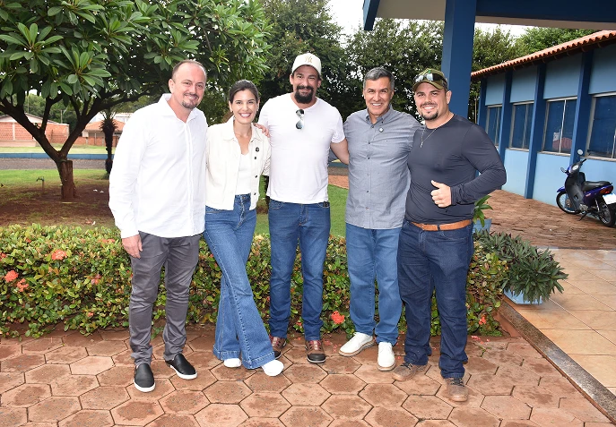

Escuta
Ouvir a população e as lideranças de cada município.
Política de verdade se mede pelo que chega para as pessoas.
Não adianta discurso bonito em Brasília ou na Assembleia se o recurso não aparece na cidade, se a obra não sai do papel, se a entidade continua sem apoio.
Conheça as áreas de atuação
Visitando prefeitos, conversando com vereadores, conhecendo entidades e ouvindo a população. É assim que entendo o que cada cidade precisa e como os recursos devem chegar onde são necessários.
Ouvir a população e as lideranças de cada município.
Entender necessidades e prioridades locais.
Articular investimentos e encaminhamentos.
Acompanhar a aplicação dos recursos e seus resultados.
Ao lado do deputado federal Capitão Augusto, destinamos recursos para mais de 200 municípios do estado de São Paulo.
Equipamentos, reformas de unidades básicas, apoio a hospitais e atendimento especializado.
Melhorias em escolas, materiais e estrutura para crianças e jovens.
Recursos para entidades que cuidam de idosos, crianças e pessoas em situação de vulnerabilidade.
Investimentos voltados às necessidades de estrutura dos municípios.
Quadras, equipamentos e apoio a projetos que promovem saúde e oportunidades para jovens.
Iniciativas que preservam recursos naturais e cuidam do que é de todos.
Cada recurso que destinamos é acompanhado de perto. Recurso público é dinheiro do povo e precisa ser bem aplicado.
Não aceito desperdício, desvio nem obra pela metade. O que sai dos nossos mandatos precisa virar resultado concreto na vida das pessoas.
01 Menos promessa, mais entrega.
02 Menos gabinete, mais presença.
03 Menos discurso, mais transformação.
Envie sua demanda ou sugestão para o mandato.